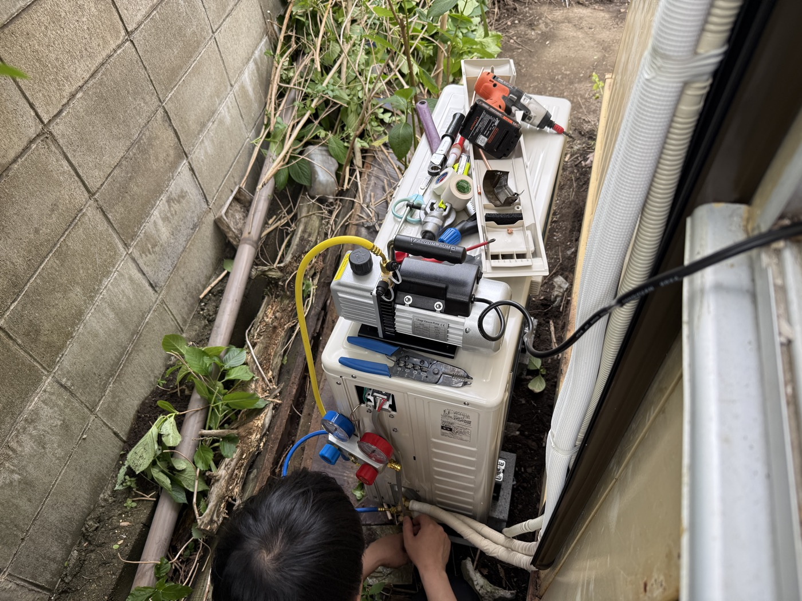

エアコンは見るからに奇妙な家電だ。室内機と室外機が３本の管で繋がっている。冷媒管２本と銅線１本。管の中の冷媒？は室内と室外を行き来するわけだけど、その様が空港の国際線ロビーの感じに似ている気がする。
３本の管はそれぞれが絶縁テープや保護クッションに巻かれたりしていて、さらにそれをテープで束ねて、保護用のカバーレールに収納して壁に這わせる。
その他、真空機のカラフルなコード。
＊＊＊
室外機を置く場所に紫陽花が生えていた。前私が住んでいた家の室外機の前にも紫陽花がたくさん植えられてあったので、紫陽花の茎がスカスカなこと、途中でポキンと折れて服などに突き刺さることを知っている。今回も、作業用のスペースを確保するのに紫陽花は厄介だった。エアコンの作業を待ちながら、紫陽花を一気に剪定してみる。背を低く、小さく。
塀の足元には、古い雨樋のような長いパイプや棚の残骸のようなものが打ち捨てられている。切断した紫陽花のスカスカの茎はそこに重ねておいておく。
